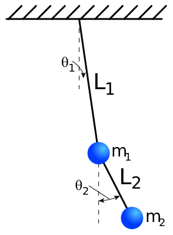

There are a lot of ways to describe how a physical system changes in time. The most common one people talk about, and the oldest, involves thinking about forces, $&F=ma=m\ddot x&$ (if a symbol has dots over it, that's a short way of saying it's a time derivative of that quantity.) All you "need" to do is figure out what forces are there and then that tells you how particles speed and direction changes over time. These are called the Newton's equations of motion often. This approach is the easiest to visualize because it deals with positions, and for many people it's very easy to imagine say, an address on a chess board being the information that tells you where a thing is. Thinking of position like this is sometimes referred to as Cartesian coordinates but a lot of times the Cartesian coordinates are specify more information than is necessary. For example if you think about a pendulum, or an acrobats swing, it can only move along a circle. While the acrobat has a position left and right of where they started, and a position top to bottom of where they started, or 2 dimensions in space, really only one number is needed to describe both locations, because they're stuck on a circle. It's possible to add forces to take into account of this new movement, but it quickly complicates things and sometimes makes it very hard to be sure you've accounted for everything.
another approach to how systems change in time involves making a mathematical expression that is the kinetic energy minus the potential energy of the system, called the Lagrangian, call it L. When you have the Lagrangian, you can find the Euler-Lagrange equations of motion, $&\frac{d}{dt}(\frac{dL}{d\dot q})=\frac{dL}{dq}&$, here q is a generalization of cartesian position, so it might be the chess board positions like x and y, but it is just as often or even more often some abstract position like the angle ($&\theta&$ is the symbol for the greek letter theta and is commonly used for angles ) away from horizontal, which is more natural for a pendulum. Once you define the Lagrangian in terms of these abstract coordinates, the equations of motions can be churned out and you can be more confident that you didn't miss anything.
A third way to work with these systems is to find Hamilton's equations, but one of the easier ways to talk about them involves first finding the Lagrangian. So we'll start with an explicit example first of the double pendulum.
 So if there's a number next to a symbol that indicates which one of the two pendulums the symbol refers to. This image shows explicitly things like $&m_1&$ and $&l_2&$. If we want to determine the lagrangian we need to find the potential energy and kinetic energy of this system. I'll be ducking back forth between cartesian coordinates, $&x_1,y_1,x_2,y_2&$ and the angular coordinates, $&\theta_1,\theta_2&$.
Potential Energy
Because it's easier, we'll start with potential energy (often times denoted as U). The simplest treatment of gravity is to say it's constant, and that'll give you potential energy of mass times gravity times height, or $&mgh&$. We'll say that the pivot point for the first pendulum is the origin, so that means $&y_1=-l_1cos(\theta_1)&$. It would seem like the same should apply for the second mass, but it's pivot point isn't at the origin, it's already been moved down to $&y_1&$, so $&y_2=y_1-l_2cos(\theta_2)=-l_2cos(\theta_2)-l_1cos(\theta_1)&$. These two heights give us $&U = -gm_1l_1cos(\theta_1) +gm_2(-l_2cos(\theta_2)-l_1cos(\theta_1))&$ which is a bit more compactly written as $&U = -g(m_1+m_2)cos(\theta_1) - gm_2l_2cos(\theta_2)&$
Kinetic Energy
Kinetic energy (often denoted as T) is going to prove more elaborate. In cartesian coordinates it's pretty simple, it's total velocity squared times mass divided by 2. $&T_1 = \frac{m_1}{2}(\dot x_1^2 + \dot y_1^2)&$ But doing it in terms of angular velocity we have $&T_1 = \frac{m_1}{2}((l_1\dot \theta_1 cos(\theta_1))^2 + (l_1\dot \theta_1 sin(\theta_1))^2)&$ but fortunately we can take advantage of the fact that $&cos(\theta_1)^2 + sin(\theta_1)^2=1&$ to rewrite it as $&T_1 = \frac{m_1}{2}l_1^2\dot \theta_1^2&$. The second weights kinetic energy is a bit trickier, much like when the potential energy was complicated by the fact that the pivot point wasn't fixed, we have to add terms together. Only now they're going to get squared afterwards. $&\frac{m_{2}}{2} \left(\left(l_{1} \dot \theta_{1} \sin{\left (\theta_{1} \right )} + l_{2} \dot \theta_{2} \sin{\left (\theta_{2} \right )}\right)^{2} + \left(l_{1} \dot \theta_{1} \cos{\left (\theta_{1} \right )} + l_{2} \dot \theta_{2} \cos{\left (\theta_{2} \right )}\right)^{2}\right)&$ When you expand it out you get 3 terms $&\frac{m_{2}}{2} \dot \theta_{1}^{2} l_{1}^{2} + \frac{m_{2} }{2} \dot \theta_{2}^{2} l_{2}^{2} + l_{1} l_{2} m_{2} \dot \theta_{1} \dot \theta_{2} \left ( \sin{\left (\theta_{1} \right )} \sin{\left (\theta_{2} \right )} + \cos{\left (\theta_{1} \right )} \cos{\left (\theta_{2} \right )}\right ) &$ The first two look like kinetic energy for the first mass, but the third is all wonky. we can clean it up a bit noting that $&\sin{ (\theta_{1} )} \sin{ (\theta_{2} )} + \cos{ (\theta_{1} )} \cos{ (\theta_{2} )} = \cos(\theta_1-\theta_2)&$ So we're finally left with $&T=T_1+T_2= \frac{m_1}{2}l_1^2\dot \theta_1^2 +\frac{m_{2}}{2} \dot \theta_{1}^{2} l_{1}^{2} + \frac{m_{2} }{2} \dot \theta_{2}^{2} l_{2}^{2} + l_{1} l_{2} m_{2} \dot \theta_{1} \dot \theta_{2}\cos(\theta_1-\theta_2) &$ Noticing again that the second mass effectively increases the mass of the first one and adds a bit of complication to boot as T can be rewritten as $&T= \frac{m_1+m_2}{2}l_1^2\dot \theta_1^2 + \frac{m_{2} }{2} ( \dot \theta_{2}^{2} l_{2}^{2} + 2l_{1} l_{2} \dot \theta_{1} \dot \theta_{2}\cos(\theta_1-\theta_2) ) &$
Lagrangian and general momentum
So we now have $&L=T-U= \frac{m_1+m_2}{2}l_1^2\dot \theta_1^2 + \frac{m_{2} }{2} ( \dot \theta_{2}^{2} l_{2}^{2} + 2l_{1} l_{2} \dot \theta_{1} \dot \theta_{2}\cos(\theta_1-\theta_2) ) +g(m_1+m_2)cos(\theta_1) +gm_2l_2cos(\theta_2) &$ Which lets us now find the equations of motion $&\frac{d}{dt}(\frac{dL}{d\dot q})=\frac{dL}{dq}&$. However the observant individual might have noticed earlier how similar that is to newton's equations of motions $&F=ma=m\ddot x&$. If you missed it, though, let me cast it into a different form. $&m\ddot x = \frac{d}{dt}(p_x) = \frac{d-U}{dx}=F&$ Seeing it put this way the idea of defining an abstract momentum as $&\frac{dL}{d\dot q}&$ doesn't seem like much of a stretch. So if that's the definition we have for what we'll call the conjugate momentum then we get the pair of momenta $&p_1= l_{1}^2 (m_{1} + m_{2})\dot \theta_{1} + l_{1}l_{2} m_{2} \cos (\theta_{1} - \theta_{2}) \dot \theta_{2}&$ and $&p_2= l_{1} l_{2} m_{2} \cos(\theta_{1} - \theta_{2}) \dot \theta_{1} + l_{2}^2m_2 \dot \theta_{2}&$. These two equations form what is known as a linear relationship between angular velocity and the momentum, because we could simplify it as $&p_1= a \dot \theta_{1} + b \dot \theta_{2}&$ and $&p_2= c \dot \theta_{1} + d \dot \theta_{2}&$, now, the coefficients a through d might be complicated functions angles, and constants, but the angular velocity only varies with the first power. This means we could make a matrix to turn angular velocities. And in this case as long as $&\cos(\theta_{1} - \theta_{2})^2 \neq \frac{m_1+m_2}{m_2}&$ we can invert the matrix and find expressions for the angular velocities in terms of the momenta and rewrite the kinetic energy. This is nice because notice that $&\frac{m_1+m_2}{m_2} > 1&$ for all combinations where the masses aren't 0 and $&\cos(\theta_{1} - \theta_{2})^2 \le 1 &$. The results are $&\dot \theta_{1}= \frac{l_{1}l_{2} p_{2} \cos{\left (\theta_{1} - \theta_{2} \right )} - l_{2}^2 p_{1}}{l_{1}^{2} l_{2}^2 \left(- m_{1} + m_{2} \cos^{2}{\left (\theta_{1} - \theta_{2} \right )} - m_{2}\right)}&$ and $&\dot \theta_{2}= \frac{- l_{1}^2 p_{2} \left(m_{1} + m_{2}\right) + l_{2}l_{1} m_{2} p_{1} \cos{\left (\theta_{1} - \theta_{2} \right )}}{l_{1}^2 l_{2}^{2} m_{2} \left(- m_{1} + m_{2} \cos^{2}{\left (\theta_{1} - \theta_{2} \right )} - m_{2}\right)}&$ getting us to $&T = \frac{ (m_{1} + m_{2}) l_{1}^{2} p_{2}^{2} - 2 l_{1} l_{2} m_{2} p_{1} p_{2} \cos{\left (\theta_{1} - \theta_{2} \right )} + l_{2}^{2} m_{2} p_{1}^{2} } {2 l_{1}^{2} l_{2}^{2} m_{2} \left(m_{1} - m_{2} \cos^{2}{\left (\theta_{1} - \theta_{2} \right )} + m_{2}\right)}&$. With this we can find the Hamiltonian easily as in this case it is simply the kinetic energy plus the potential energy. In general $&H=p\dot q - L&$ but because our lagrangian doesn't explicitly have time show up in it's definition, or is constant in time, $&H=T+U= \frac{l_{1}^{2} m_{1} p_{2}^{2} + l_{1}^{2} m_{2} p_{2}^{2} - 2 l_{1} l_{2} m_{2} p_{1} p_{2} \cos{\left (\theta_{1} - \theta_{2} \right )} + l_{2}^{2} m_{2} p_{1}^{2}}{2 l_{1}^{2} l_{2}^{2} m_{2} \left(m_{1} - m_{2} \cos^{2}{\left (\theta_{1} - \theta_{2} \right )} + m_{2}\right)} - g m_{2} \cos{\left (\theta_{2} \right )} - g \left(m_{1} + m_{2}\right) \cos{\left (\theta_{1} \right )} &$ So we've now found two constructs, the Lagrangian and the Hamiltonian, but why?
Properties of H
Well, first, with a Lagrangian you end up with 2nd order differential equations $&\frac{d}{dt}(\frac{dL}{d\dot q})=\frac{dL}{dq}&$, there are 2 time derivatives implied on the left side of the equal sign. This can be nasty to deal with. With a Hamiltonian, you instead have twice as many equations, but they're first order, which offers a few advantages in approximating them, $&\dot q = \frac{dH}{dp}&$ and $&\dot p = -\frac{dH}{dq}&$. But also the Hamiltonian has a number of useful mathematical features. Two that I will mention but not elaborate on are the Poisson Bracket and Liouville's theorem. We'll touch on Liouville's theorem in a different article with a system that's easier to draw.
Equations of motion
Before we find the Hamiltonian equations of motion, I'm gonna make some substitutions that I think clean up the system algebra a bit. I'm going to say $&m_1 = m&$ and $&m_2 = am&$ and do the same for the lengths, saying $&l_2 = bl&$, these substitutions leave us with $&H= \frac{ a b^{2} p_{1}^{2} + a p_{2}^{2} + p_{2}^{2} - 2 a b p_{1} p_{2} \cos{\left (\theta_{1} - \theta_{2} \right )} }{ 2 a b^{2} l^{2} m \left( 1 + a \sin^{2}{\left (\theta_{1} - \theta_{2} \right )} \right) } - g m \left(a \cos{\left (\theta_{2} \right )} + \left(a + 1\right) \cos{\left (\theta_{1} \right )}\right) &$ So, let's get down to the equations of motion now.
- $&\dot \theta_1 = \frac{dH}{dp_1} = \frac{b p_{1} - p_{2} \cos{\left (\theta_{1} - \theta_{2} \right )}}{b l^{2} m \left(a \sin^{2}{\left (\theta_{1} - \theta_{2} \right )} + 1\right)}&$
- $&\dot \theta_2 = \frac{dH}{dp_2}= \frac{- a b p_{1} \cos{\left (\theta_{1} - \theta_{2} \right )} + (1+a) p_{2}}{a b^{2} l^{2} m \left(a \sin^{2}{\left (\theta_{1} - \theta_{2} \right )} + 1\right)} &$
- $&\dot p_1 = -\frac{dH}{d\theta_1}= - \frac{1}{b^{2} l^{2} m \left(a \sin^{2}{\left (\theta_{1} - \theta_{2} \right )} + 1\right)^{2}} \left(b^{2} g l^{2} m^{2} \left(a + 1\right) \left(a \sin^{2}{\left (\theta_{1} - \theta_{2} \right )} + 1\right)^{2} \sin{\left (\theta_{1} \right )} + C_1 - C_2 \right ) &$
- $&\dot p_2 = -\frac{dH}{d\theta_2}= - \frac{1}{b^{2} l^{2} m \left(a \sin^{2}{\left (\theta_{1} - \theta_{2} \right )} + 1\right)^{2}} \left(a b^{2} g l^{2} m^{2} \left(a \sin^{2}{\left (\theta_{1} - \theta_{2} \right )} + 1\right)^{2} \sin{\left (\theta_{2} \right )} - C_1 + C_2 \right ) &$
- $&C_1 = b p_{1} p_{2} \left(a \sin^{2}{\left (\theta_{1} - \theta_{2} \right )} + 1\right) \sin{\left (\theta_{1} - \theta_{2} \right )}&$
- $&C_2 = \left(a b^{2} p_{1}^{2} - 2 a b p_{1} p_{2} \cos{\left (\theta_{1} - \theta_{2} \right )} + a p_{2}^{2} + p_{2}^{2}\right) \sin{\left (\theta_{1} - \theta_{2} \right )} \cos{\left (\theta_{1} - \theta_{2} \right )}&$
This matrix has a determinant of $&\frac{g^2(a+1)}{b^2l^4}&$ and eigen vector-value pairs as follows
- $& - \frac{i \sqrt{g}}{l} \sqrt{\sqrt{2} + 2} &$ and $&\left[\begin{matrix}- \frac{i \sqrt{2 \sqrt{2} + 4}}{2 \sqrt{g} l m}\\\frac{i \sqrt{\sqrt{2} + 2}}{\sqrt{g} l m}\\- \sqrt{2}\\1\end{matrix}\right] &$
- $& \frac{i \sqrt{g}}{l} \sqrt{\sqrt{2} + 2} &$ and $&\left[\begin{matrix}\frac{\sqrt{-4 - 2 \sqrt{2}}}{2 \sqrt{g} l m}\\- \frac{i \sqrt{\sqrt{2} + 2}}{\sqrt{g} l m}\\- \sqrt{2}\\1\end{matrix}\right] &$
- $& - \frac{i \sqrt{g}}{l} \sqrt{- \sqrt{2} + 2} &$ and $&\left[\begin{matrix}\frac{\sqrt{-4 + 2 \sqrt{2}}}{2 \sqrt{g} l m}\\\frac{\sqrt{-2 + \sqrt{2}}}{\sqrt{g} l m}\\\sqrt{2}\\1\end{matrix}\right] &$
- $& \frac{\sqrt{g}}{l} \sqrt{-2 + \sqrt{2}} &$ and $&\left[\begin{matrix}\frac{i \left(- \sqrt{2} + 1\right)}{\sqrt{g} l m \sqrt{- \sqrt{2} + 2}}\\\frac{\sqrt{-2 + \sqrt{2}}}{\sqrt{g} l m}\\\sqrt{2}\\1\end{matrix}\right] &$
some confusion revolves around how $&\left[\begin{matrix}0 & 0 & \frac{1}{l^{2} m} & - \frac{1}{b l^{2} m}\\0 & 0 & - \frac{1}{b l^{2} m} & \frac{2 a + 2}{2 a b^{2} l^{2} m}\\g m \left(a + 1\right) & 0 & 0 & 0\\0 & a g m & 0 & 0\end{matrix}\right] &$ is the matrix for the opposing situation where the pendulums are inverted, as it has the same determinant. But it's eigen vectors and modes are
- $& - \frac{\sqrt{g}}{l} \sqrt{- \sqrt{2} + 2} &$ and $&\left[\begin{matrix}\frac{- \sqrt{2} + 1}{\sqrt{g} l m \sqrt{- \sqrt{2} + 2}}\\- \frac{\sqrt{- \sqrt{2} + 2}}{\sqrt{g} l m}\\\sqrt{2}\\1\end{matrix}\right] &$
- $& \frac{\sqrt{g}}{l} \sqrt{- \sqrt{2} + 2} &$ and $&\left[\begin{matrix}\frac{\sqrt{- 2 \sqrt{2} + 4}}{2 \sqrt{g} l m}\\\frac{\sqrt{- \sqrt{2} + 2}}{\sqrt{g} l m}\\\sqrt{2}\\1\end{matrix}\right] &$
- $& - \frac{\sqrt{g}}{l} \sqrt{\sqrt{2} + 2} &$ and $&\left[\begin{matrix}\frac{\sqrt{2 \sqrt{2} + 4}}{2 \sqrt{g} l m}\\- \frac{\sqrt{\sqrt{2} + 2}}{\sqrt{g} l m}\\- \sqrt{2}\\1\end{matrix}\right] &$
- $& \frac{\sqrt{g}}{l} \sqrt{\sqrt{2} + 2} &$ and $&\left[\begin{matrix}- \frac{\sqrt{2 \sqrt{2} + 4}}{2 \sqrt{g} l m}\\\frac{\sqrt{\sqrt{2} + 2}}{\sqrt{g} l m}\\- \sqrt{2}\\1\end{matrix}\right] &$